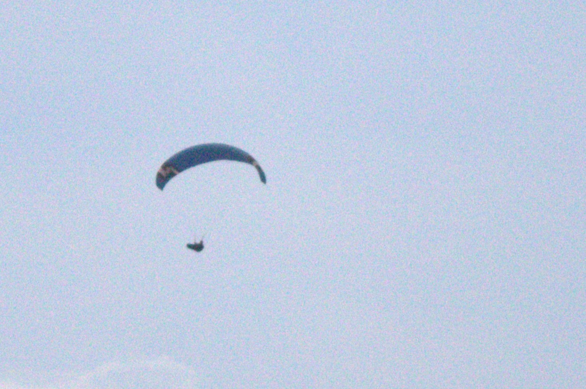

Tirarse en parapente
Paragliding



La experiencia de tirarse en parapente
The Paragliding Experience
Hay momentos que se recuerdan toda la vida.
Y luego está el instante en el que das el paso fuera del avión.
El ruido del motor desaparece. El aire golpea tu cara. El corazón se acelera. Durante unos segundos, el
mundo deja de importar porque estás cayendo a más de 200 km/h… completamente vivo.
Eso es el paracaidismo.
La experiencia
Todo empieza en tierra, entre nervios y adrenalina. Te equipas, conoces a tu instructor y subes al avión
mientras el paisaje se hace cada vez más pequeño bajo tus pies.
A 4.000 metros de altura, se abre la puerta.
Respiras.
Miras el horizonte.
Y saltas.
La caída libre es pura intensidad: una mezcla imposible de adrenalina, libertad y euforia. No hay
sensación comparable. No es como una montaña rusa. No es como volar. Es algo mucho más real.
Y entonces, de repente… silencio.
El paracaídas se abre y todo cambia. Flotas sobre el paisaje con una calma increíble, disfrutando de
vistas panorámicas, del viento y de una sensación de paz que contrasta con la descarga brutal de
adrenalina de segundos antes.
There are moments you remember for the rest of your life.
And then there’s the instant you step out of the plane.
The engine noise disappears. The wind rushes against your face. Your heart starts racing. For a few
seconds, the world stops mattering because you’re falling at over 200 km/h… completely alive.
That’s skydiving.
The Experience
It all begins on the ground, somewhere between nerves and adrenaline. You gear up, meet your instructor,
and board the plane as the landscape beneath your feet grows smaller and smaller.
At 4,000 meters above the ground, the door opens.
You breathe.
You look at the horizon.
And you jump.
Freefall is pure intensity: an impossible mix of adrenaline, freedom, and euphoria. There’s no feeling
quite like it. It’s not like a roller coaster. It’s not like flying. It’s something far more real.
And then, suddenly… silence.
The parachute opens, and everything changes. You float peacefully above breathtaking landscapes,
enjoying panoramic views, the wind, and an incredible sense of calm that perfectly contrasts with the
powerful adrenaline rush from moments before.